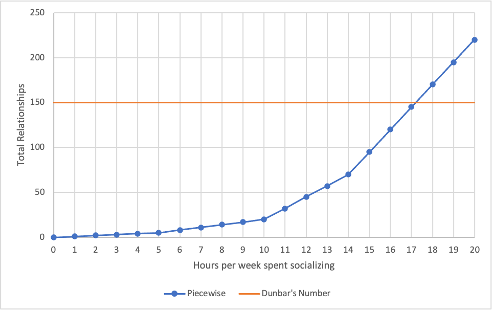

Taking a deeper look at Dunbar's number with some math, plus suggestions on increasing one's personal number.
Note that Dunbar's number is used loosely in this post. It will mean group size limit due to either biological, social, or psychological constraints.
In his 1992 paper, Neocortex size as a constraint on group size in primates, Dunbar argues there is a limit of social contacts one can have due to limited mental processing power (neocortex size). With this Dunbar's number of 150 was born, stating there is "suggested cognitive limit to the number of people with whom one can maintain stable social relationships—relationships in which an individual knows who each person is and how each person relates to every other person". In short, someone can only have so many friendships before they aren't able to maintain all of them.
For the curious, 150 was calculated via the following regression equation:
\[\log_{10}(N) = 0.093 + 3.389 \log_{10}(C_{R, homo})\]Where \(N\) is the mean group size and \(C_{R, homo}\) is the neocortex ratio of homo (humans). Solving for \(N\) and substituting \(C_{R, homo} = 4.1\) (last entry of Table 1):
\[\begin{align*} N_{\text{homo}} &= 10^{0.0.93} C_{R, \text{homo}}^{3.39} \\ &= 1.24 C_{R, \text{homo}}^{3.39} \\\ &= 1.24 (4.1)^{3.39} \\\ &= 148.2 \end{align*}\]As for the confidence interval value of 100-230... I am not able to figure out the exact calculation. Dunbar confirms the value in his preprint Coevolution of neocrotical size, group size and language in humans (see paragraph four of "Results" section):
Because the equation is log-transformed and we are extrapolating well beyond the range of neocortex ratios on which it is based, the 95% confidence limits around this prediction (from formulae given by Rayner 1985) are moderately wide (100.2-231.1).
Rayner's referenced Linear relations in biomechanics: the statistics of scaling functions is above my statistics skill level.
Dunbar responded to my question:
In this case, they are calculated in the usual way: two standard deviations from the predicted value, with SDs are determined from the original graph and its moments. You will obviously be alert enough to notice that the original graph is a double log plot, so when you convert these back into raw scores, the value on the RHS will always be larger than that on the LHS.
Please contact me if you can do the math.
It's important to note that 150 is an estimated upper-bound, not a recommendation or absolute. The number can vary based on a few variables, discussed later.
In another article, Why drink is the secret to humanity's success, Dunbar provides two more specific numbers:
Our studies suggest that we devote about 40 per cent of our available social time (and the same proportion of our emotional capital) to an inner core of about five shoulders-to-cry-on. And we devote another 20 per cent to the next 10 people who are socially most important to us. In other words, about two-thirds of our total social effort is devoted to just 15 people.
And in another paper, Discrete hierarchical organization of social group sizes, Dunbar proposes yet more specific numbers:
First, we denote S1 as the mean support clique size, S2 the mean sympathy group size, S3 the mean band size, S4 the mean community group size, and S5 and S6 the mean sizes of mega-bands and large tribes, respectively. Averaging across these grouping levels, the data give mean values of S0 = 1 (individual or ego), S1 = 4.6, S2 = 14.3, S3 = 42.6, S4 = 132.5, S5 = 566.6 and S6 = 1728.
This suggests that humans form groups according to a discrete hierarchy with a preferred scaling ratio between 3 and 4 (the mean of Si/Si-1 is 3.52).
Each Sx can be described as and rounded to the following (descriptions taken from BBC's Dunbar's number: Why we can only maintain 150 relationships):
Weekly time requirements can be applied to maintain friendship levels across each Sx group, assuming Dunbar's mean Sx values are approximately correct.
With these values, one can maintain a network of 220 relationships with 20 hr/week, or 3 hr/day, of socializing. While possible, it is challenging, even when combining multiple activities.
These requirements form a piecewise function with number of hours devoted to socialization as the independent variable and total number of relationships as the dependent variable, assuming each Sx is completely satisfied in order:
The intersection of Dunbar's original 150 and the function is at 17.2 hr/week, or 2.5 hr/day, of socialization. This is not an unreasonable amount of time to spend socializing, given that the average person gets 7-10 hr/day of possible socialization time.
A Dunbar number can also be found by working backwards from the average socialization time.
In their American Time Use Survey, the U.S. Bureau of Labor Statistics found that:
Socializing and communicating, such as visiting with friends or attending or hosting social events, accounted for an average of 38 minutes per day, and was the next most common leisure activity after watching TV. Individuals spent twice as much time socializing on weekend days (58 minutes) as on weekdays (29 minutes).
Assuming the loved ones are taken care of outside of the 38-minute average, the starting point is the S2 level. With a mere 5 hr (rounded up from 4.4 hr) of socialization per week, priorities must be chosen. S2 individuals can be focused on at the expense of S3, or a mix of the two can be formed. The number of friendship then ranges from 15 (only S2) to 53 (all of S3 + 3 S2s).
As stated before, 150 is just an estimate based on literal monkey brains mapped to human brains via a regression equation. The confidence interval of 100-230 proves the possible variation. There are a few more causes of variation that aren't based on biological factors, but personal ones.
Extroverts typically enjoy seeking out new friends, while introverts don't as much. This seeking out can either increase the socialization time spent per week or make the other person more likely to enjoy the extrovert's company with the same amount of time spent, since outgoing people are generally more likable than not.
Working longer hours or in a role that doesn't allow as much socialization decreases the amount of hours available for socializing. For example, a friend works at a Big Four company in a management role and consistently works 12-14 hr/day and sleeps 6 hr/night, leaving him with 4-6 hr of free time per day. While he can still maintain the aforementioned 220 relationships, it would require 50-75% of his free time, way too much. (This doesn't take into account his working relationships, which I am unsure about.) It's easy to see that more hours limits the number of possible relationships by causing socialization to take up a greater percentage of free time.
| % Free Time Spent Socializing | Number of Relationships |
|---|---|
| 10 | 4 |
| 25 | 26 |
| 50 | 220 |
The other factor is the nature of the profession. Working the night shift as a custodian provides less opportunities for forming relationships than being a sales rep for a company and having to maintain business relationships, which can often morph into personal friendships.
Putting effort into friendships makes a world of difference. Showing interest in someone's life makes them like you more and thus easier to maintain relationships, i.e., less time is required. After all, who would want to remain friends with someone they don't like?
Being honest, someone's likability is correlated with their status, thus signaling high personal value will lead to more people wanting to be friends with you.
Below are some concrete suggestions for increasing one's personal Dunbar number or making maintaining the current one easier: